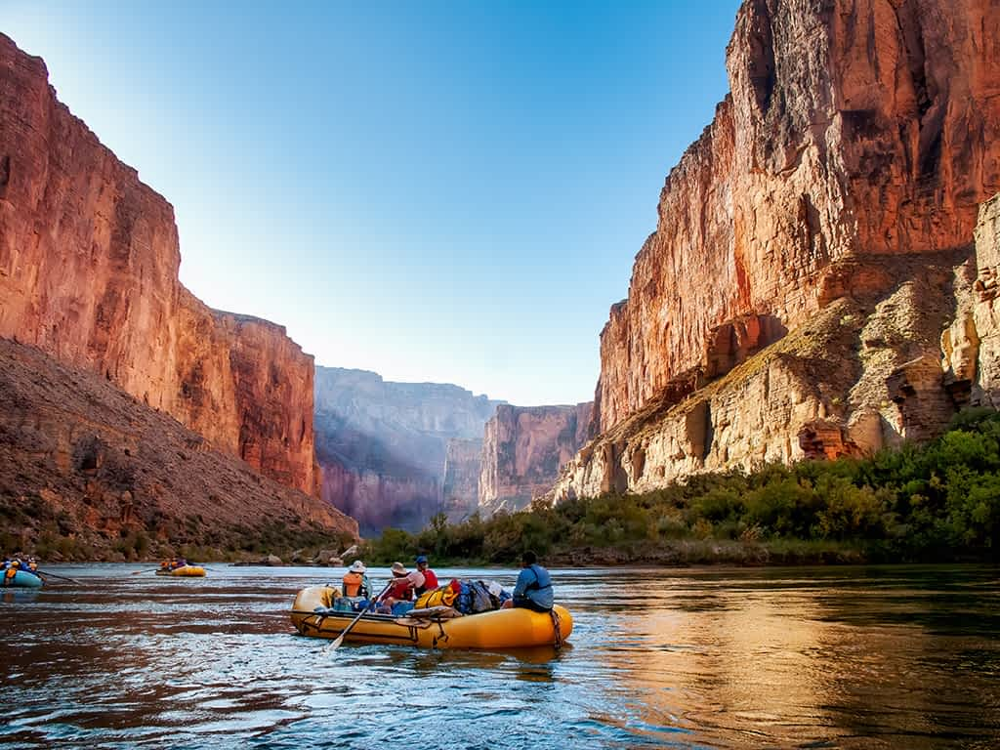
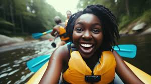

Let is carve out time for ourselves, connect with nature, and ride the rapids together. A little thrill, a lot of laughs, and memories to last a lifetime—rafting is the perfect way to recharge and bond!


Mija Women Rafting Co.
History
It all started with a weekend rafting trip. A group of friends, all women, set out to escape the daily grind and reconnect with nature. As the rapids roared and paddles splashed, laughter and encouragement filled the air. For the first time, many felt the thrill of adventure in a space that felt uniquely their own. One woman, inspired by the camaraderie and confidence the trip sparked, had an idea: Why not create this for others? She began organizing all-women rafting experiences where participants could challenge themselves, bond, and discover strength they never knew they had. What started as a passion project grew into a mission—to empower women through adventure. Today, our rafting company offers more than just a trip down the river; it is a community where women find friendship, courage, and unforgettable memories, one rapid at a time.